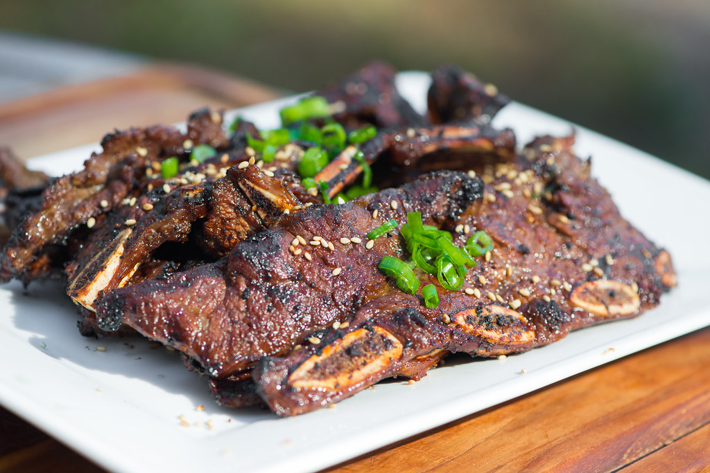

Galbi(Korean Short Ribs)

Recipe Source
The word galbi literally means “ribs,”and the full name of this dish is galbi gui (grilled). It is the most popular backyard/outdoor BBQ dish in Korean homes.
Galbi short ribs come in two different cuts – flanken cut (ribs are cut thin across the bones) and English cut (ribs are separated and cut into short lengths). Interestingly, Koreans call the flanken cut “LA galbi,” named after the city where early Korean immigrants started to use this cut for galbi.
While LA galbiis convenient and increasingly popular in America and even in Korea these days, the butterflied English cut is classic for grilled galbi in Korea.
Ingredients
- 3-4 pounds beef short ribs (good quality English cut)
- 1/2 cup soy sauce
- 1/2 cup water
- 1/4 cup sugar
- 2 tablespoons honey
- 1/4 cup rice wine (or Mirin)
- 1/4 cup about 1/2 of a medium Korean/Asian pear grated
- 1/4 cup about 1/2 of a medium onion grated
- 2 tablespoons minced garlic
- 1 teaspoon minced ginger
- 2 tablespoons sesame oil
- 1/2 teaspoon black pepper
Steps
- Rinse the ribs and drain water. Trim excess fat. Butterfly the short ribs so the meat is 1/4 to 1/2-inch thick. (See below for the instructions.)
- Mix all marinade ingredients well. Marinate the meat for at least 6 hours (overnight for best results). The thicker the meat the longer you'll want to marinate.
- It's best to grill over charcoal or wood charcoal (sootbul), but a gas grill works well too. Grill over medium high to high heat, turning only once, 2 - 3 minutes on each side. Make sure to preheat the grill for nice grill marks.
Notes
Galbi can be broiled in the oven. Set the oven to broil and preheat. Lay the meat in a single layer on a broil pan and place it on the top rack of the oven, usually about 6 inches below the broiler. Cook for 5 to 6 minutes. Flip them over and cook for an additional 3 -4 minutes until nicely charred.)